Otters are part of the Mustelid family of animals which also includes badgers, pine martens and weasels. There are 14 species of otter around the world and many of them are endangered.
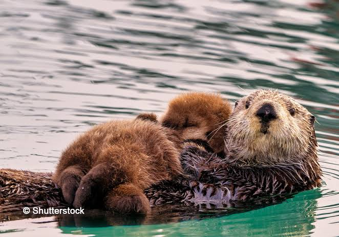
Enhydra lutris has three genetically distinct subspecies that live geographically separate populations:
- ⚬ Enhydra lutris nereis—Southern sea otter: Found along the coast of California.
- ⚬ Enhydra lutris kenyoni—Northern sea otter: Found along the coast of Alaska, British Columbia, and Washington.
- ⚬ Enhydra lutris lutris—Russian sea otter: Found in the Pacific ocean off the coasts of Russia and Japan.
We're gonna be focusing on the Southern Sea Otter on this page!
Size
The southern sea otter is the smallest marine mammal in North America at up to 4 feet (1.2 m) long and up to 50 pounds (23 kg) for females and 70 pounds (32 kg) for males.
Habitat
In California, the sea otter lives in kelp forests, estuaries, and other coastal habitats like harbors and shallow waters near the shores of sandy beaches.
Southern sea otters play an important role in these habitats. They're a keystone species, meaning their presence has a big impact on the habitats where they live. In turn, the health of sea otter populations also indicates the health of other species and nearby ecosystems.
In the kelp forest, sea otters prey on urchins and other invertebrates that graze on giant kelp. Without sea otters, sea urchin populations grow unchecked and overwhelm the delicate balance of the kelp forest ecosystem. The hungry grazers devour the kelp, leaving behind desolate areas called “urchin barrens” where only urchin-covered rocks remain.
But when sea otter populations are healthy, these keystone predators keep urchin populations under control. Their role in maintaining a balanced ecosystem helps the kelp grow and flourish, in turn supporting a rich and diverse community of marine life.
Diet
The southern sea otter eats invertebrates like crabs, snails, urchins, clams, abalone, and mussels—for breakfast, lunch, dinner, and plenty of snacks in between! Northern sea otters are also known to eat fish.
A sea otter may hunt on the seafloor, but they always return to the surface to eat. Floating there on their back, an otter uses their chest as a table. If a hard-shelled morsel like a crab or clam is on the menu, the otter may use a rock to crack open their prey.
Fur
Unlike other marine mammals, the sea otter doesn't have a thick layer of blubber. To stay warm in chilly ocean waters, they have the world's densest fur—at its thickest, this two-layer fur is made up of more than a million hairs per square inch. For reference, you've probably got 100,000 hairs or less on your whole head!
Metabolism
Otters stay warm thanks to their high metabolism and hefty appetite to match—a single sea otter eats about a quarter of their body weight each day. A 150-pound person would have to eat 35 to 40 pounds of food a day to match that! Their eating habits help otters maintain an average body temperature of 100 degrees Fahrenheit.
Find out more here!
Don't mistake it for the Sea Otter!!
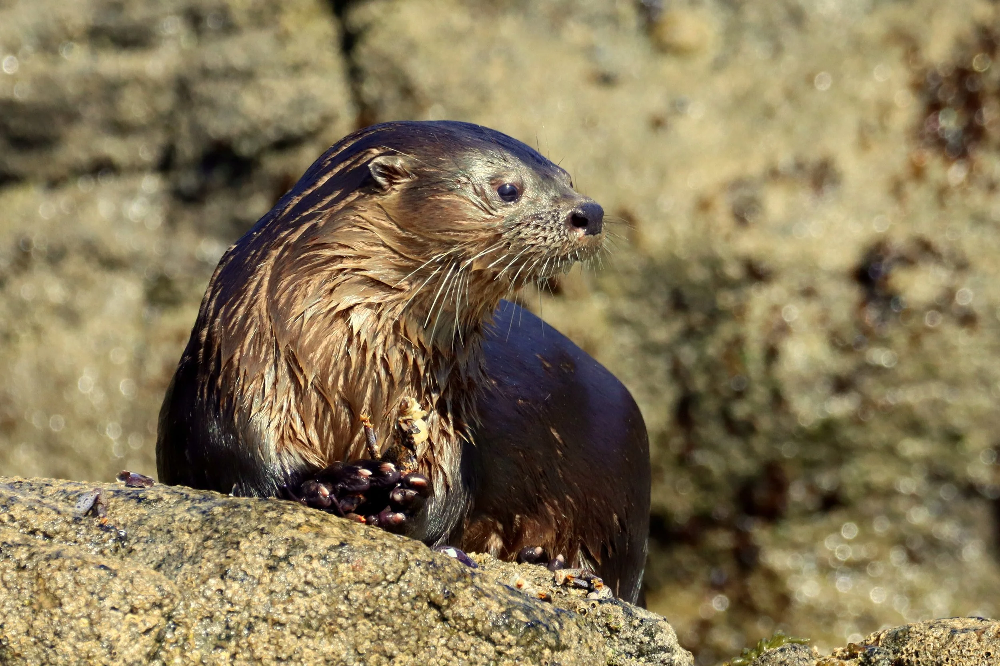
The marine otter(Lontra felina) is a rare and relatively unknown South American mammal of the weasel family(Mustelidae). The scientific name means "feline otter", and in Spanish, the marine otter is also often referred to as gato marino: "marine cat".
Appearance
The marine otter is one of the smallest otters and the smallest marine mammal, measuring 87 to 115 cm (34 to 45 in) from the nose to the tip of the tail and weighs 3 to 5 kg(6.6 to 11.0 lb). The tail measures 30 to 36 cm (12 to 14 in). Its fur is coarse, with guard hairs measuring up to 2 cm (0.79 in) in length covering dense, insulating underfur. The marine otter is dark brown above and on the sides, and fawn on the throat and underside.
The marine otter has webbed paws and strong claws. The ventral side (underside) of the paws are partially covered in fur. It has 36 teeth. The teeth are developed for slicing instead of crushing. The marine otter does not display sexual dimorphism.
Habitat
Marine otters are found in littoral areas of southwestern South America, close to shore and in the intertidal areas of northern Peru (from the port of Chimbote), along the entire coast of Chile, and the extreme southern reaches of Argentina.
Behavior
Marine otters actively avoid humans. In response to human activity, they will spend less time on coasts and stray from their dens during the day to fissures inaccessible to humans. Though generally avoidant of humans, their inhabitance of fishing villages is an indicator of the marine otter's ability to adapt to urbanization.
Diet
Studies have shown latitudinal variations in diet, feeding periods, and dive time throughout the marine otter's distribution. Marine otters of southern Chile primarily feed on fish, while those in northern Chile mostly feed on crustaceans and mollusks. The otters on Isla La Vieja, Peru presumably prey on a colony of Peruvian diving petrels regularly. In January 2009, one was seen preying on magellanic flightless steamer duck chick in Puñihuil. The species shows opportunistic feeding behavior, sometimes eating small mammals and even fruit of plants like Greigia sphacelata and Fascicularia bicolor.
Find out more here!
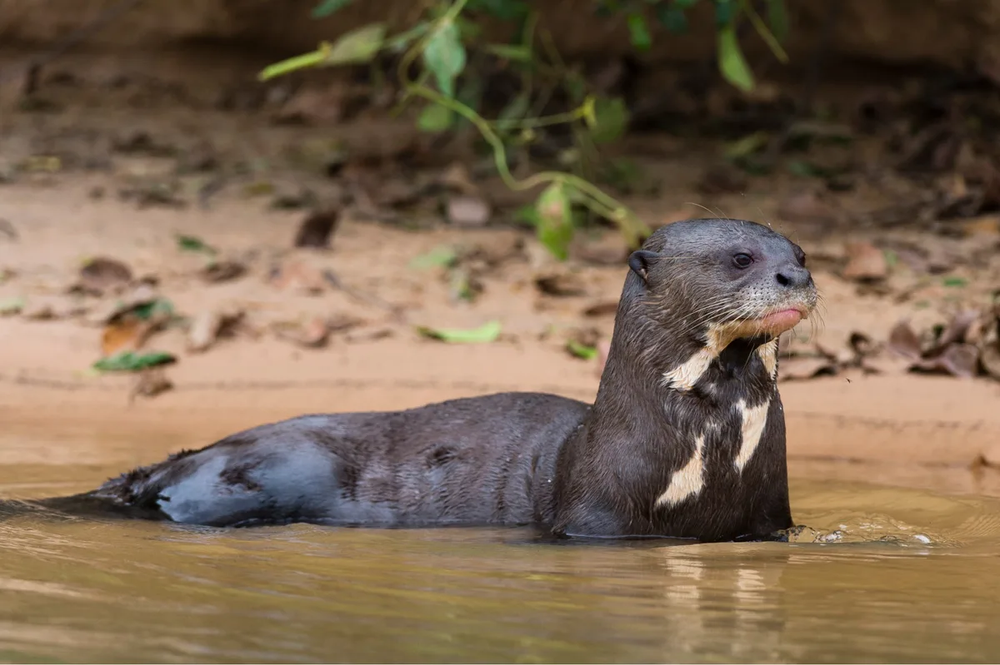
The giant otter or giant river otter(Pteronura brasiliensis) is a South American carnivorous mammal. It is the longest member of the weasel family, Mustelidae.
Appearance
The giant otter is clearly distinguished from other otters by morphological and behavioural characteristics. It has the greatest body length of any species in the mustelid family, although the sea otter may be heavier. Males are between 1.5 and 1.7 m (4 ft 11 in and 5 ft 7 in) in length from head to tail and females between 1 and 1.5 m (3 ft 3+1⁄2 in and 4 ft 11 in). The animal's well-muscled tail can add a further 70 cm (28 in) to the total body length. Weights are between 26 and 32 kg (57 and 71 lb) for males and 22 and 26 kg (49 and 57 lb) for females. The giant otter has the shortest fur of all otter species; it is typically chocolate brown, but may be reddish or fawn, and appears nearly black when wet.
Habitat
The species is amphibious, although primarily terrestrial. It occurs in freshwater rivers and streams, which generally flood seasonally. Other water habitats include freshwater springs and permanent freshwater lakes. Four specific vegetation types occur on one important creek in Suriname: riverbank high forest, floodable mixed marsh and high swamp forest, floodable low marsh forest, and grass islands and floating meadows within open areas of the creek itself. The giant otter seems to choose clear, black waters with rocky or sandy bottoms over silty, saline, and white waters.
Diet
The giant otter is an apex predator, and its population status reflects the overall health of riverine ecosystems. It feeds mainly on fish, including cichlids, perch, characins(such as piranha), and catfish. Hunting in shallow water has also been found to be more rewarding, with water depth less than 0.6 metres (2.0 ft) having the highest success rate. The giant otter seems to be opportunistic, taking whatever species are most locally abundant. If fish are unavailable, it will also take crabs, other crustaceans, snakes, and even small caimans and anacondas.
Find out more here!
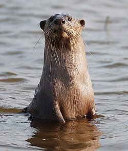
The smooth-coated otter(Lutra perspicillata) is a freshwater otter species. The smooth-coated otter is the only living species in the monotypic genus Lutrogale. Three regional subspecies are currently recognised:
- ⚬ L. p. perspicillata — occurs across India, Nepal, southwestern Yunnan, most of mainland Indochina and Southeast Asia, as well as on Sumatra and Java, Indonesia.
- ⚬ L. p. sindica — occurs in Khyber Pakhtunkhwa, Punjab and Sindh Provinces, Pakistan.
- ⚬ L. p. maxwelli — occurs in Iraq, primarily near the Tigris River.
Apperance
The smooth-coated otter has a short, sleek coat of dark-brown to reddish-brown fur along its back, with lighter grayish brown on its underside. It is distinguished from other otter species by a more "rounded" head, and by having a vaguely diamond-shaped, hairless nose. The tail is flattened, in contrast to the more rounded or cylindrical tails of other otters. The legs are short and strong, with large, webbed feet bearing strong and sharp claws for handling slippery fish. The smooth-coated otter is a relatively large otter species, weighing from 7-11 kg (15-24 lb) and measuring around 59-64 cm (23-25 in) in head-body length with a 37-43 cm (15-17 in) long tail. Females have two pairs of teats with which they nurse small litters of several young.
Habitat
The smooth-coated otter is distributed in Pakistan, India, Nepal, Bhutan, Bangladesh, southern China, Myanmar, Thailand, Cambodia, Vietnam, Peninsular Malaysia, Singapore, and on Borneo, Sumatra and Java. An isolated population lives in the marshes of Iraq. It has often been recorded in saltwater near the coast, especially on smaller islands, but requires a nearby source of freshwater. It inhabits areas where fresh water is plentiful such as wetlands, seasonal swamps, rivers, lakes and rice paddies. Where it is the only occurring otter species, it lives in almost any suitable habitat. But where it is sympatric with other otter species, it avoids smaller streams and canals in favour of larger water bodies. Smooth-coated otter groups studied in the Moyar River preferred rocky areas near fast flowing river segments with loose sand and little vegetation cover.
Diet
Smooth-coated otters were observed to forage on river banks among tree trunks. They feed mainly on fish including Trichogaster, climbing gourami and catfish. During the rice planting season, they also hunt rats in rice fields. Snakes, amphibians and insects constitute a small portion of their diet. Especially in areas where they share habitat with other otter species, they prefer larger fish, typically between 5 and 30 cm(2.0 and 11.8 in) in length.
Find out more here!
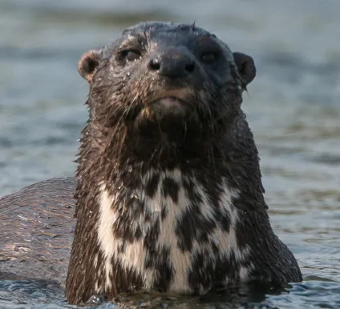
The spotted-necked otter(Hydrictis maculicollis), or speckle-throated otter, is an otter native to sub-Saharan Africa.
Appearance
The spotted-necked otter is usually chocolate to reddish brown and marked with creamy or white blotches over the chest and throat. The head is broad with a short muzzle, small rounded ears, and a hairless nose pad. The teeth are adapted for consuming fish, with large sharp upper canine teeth, curved lower canines, and sharp carnassial teeth. The jaws are similarly adapted, with the mandibular fossa fitting so snugly into the condyle on the lower jaw that the latter cannot move sideways, making it easier to capture and hold fish. It is a relatively small species, with males measuring 71 to 76 cm (28 to 30 in) from nose to rump, and weighing 5.7 to 6.5 kg (13 to 14 lb), while females are 57 to 61 cm (22 to 24 in) and 3.0 to 4.7 kg (6.6 to 10.4 lb). The tail is long and muscular, measuring 39 to 44 cm (15 to 17 in) in both sexes. It is sleek and has webbed paws. Females have two pairs of teats, and while males have a large scrotum, the penis is hidden beneath the skin, to reduce drag while swimming.
Habitat
The spotted-necked otter inhabits lakes and larger rivers throughout much of Africa south of 10°N. It is common in Lake Victoria and across Zambia, but is absent in the Zambezi below Victoria Falls, Zambia. It does not venture into salt water.
Diet
The spotted-necked otter is diurnal and appears to hunt entirely by sight using short dives of less than 20 seconds each in clear water with good visibility. It carries larger prey ashore, but eats smaller prey while treading water. It primarily eats fish, typically less than 20 cm (7.9 in) in length, but also frogs and small crustaceans, especially when fish is in short supply.
Behavior
The spotted-necked otter is very vocal, uttering high, thin whistles and rapid, shrill chatters. It sometimes lives in family groups, but appears to be social only under certain conditions. Males and females are separated for at least part of the year. They normally hunt alone, except when mothers are training their young, and are not territorial, sheltering through the night in short burrows, rock crevices, or patches of dense vegetation. On land, they travel mainly over regular paths, and rarely move more than 10 m (33 ft) from river or lake banks. Both mark these paths by "sprainting" sites, in which they habitually defecate and urinate.
The female bears a litter of up to three young after a gestation period around two months. The young are born blind and helpless, and the mother cares for them for almost a year.
Find out more here!
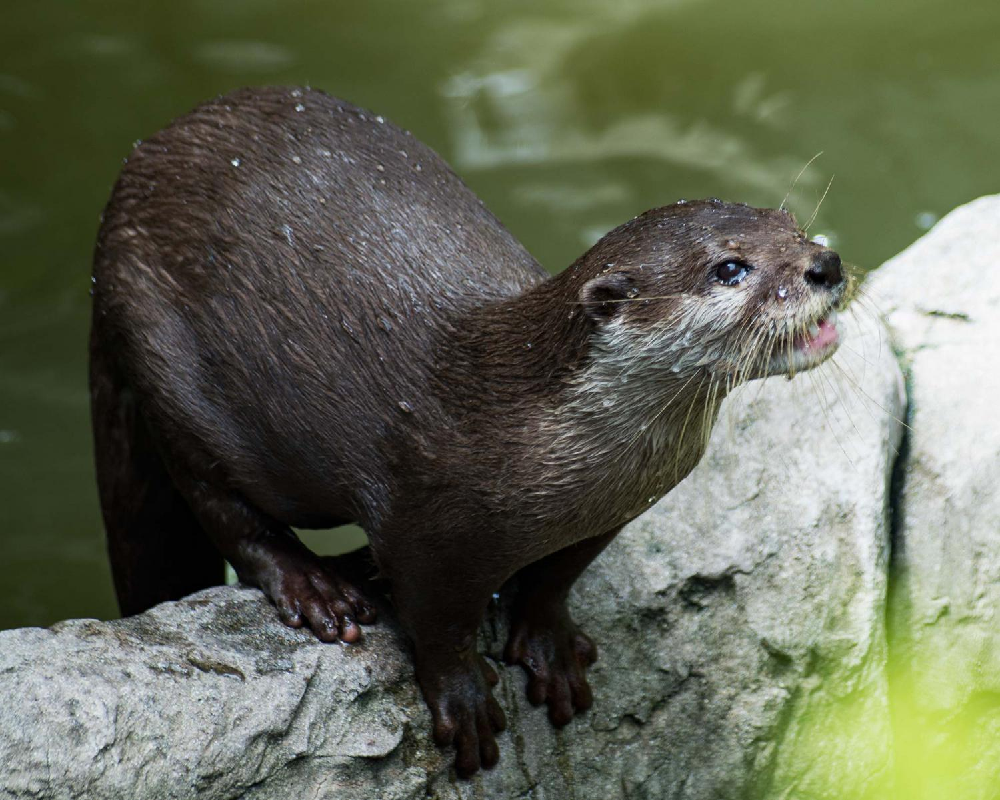
The hairy-nosed otter(Lutra sumatrana) is a semiaquatic mammal native to Southeast Asia and one of the rarest and least known otter species.
Appearance
The hairy-nosed otter has a short brown fur that becomes paler on the belly. It has a distinguished rhinarium which is fully covered with short dark hair "from the upper edge of the nostrils". Its upper lip and chin are whitish. Some individuals are reddish-chestnut in colour. Its body is long, its tail slender, and its fully webbed paws have prominent claws. Head-to-body length ranges from 57.5 to 82.6 cm (22.6 to 32.5 in), tail length from 35 to 50.9 cm(13.8 to 20.0 in), and weight from 5 to 8 kg(11 to 18 lb). Its skull is flatter than that of smooth-coated otter, and it has smaller teeth. Its forepaws are 5.8 cm(2.3 in) wide and smaller than the hind paws with about 6.6 cm(2.6 in).
Habitat
This hairy-nosed otter occurs in Southeast Asia from southern Thailand, Cambodia, southern Vietnam and Peninsular Malaysia to Sumatra and Borneo. It is locally extinct in India, Singapore and Myanmar, and possibly also in Brunei.
Behavior & Diet
The hairy-nosed otter occurs in coastal areas and on larger inland rivers, solitary or in groups of up to four. Its diet includes fish, such as broadhead catfish, snakeheads, and climbing perch, and water snakes, mollusks, and crustaceans. During the dry season, individuals forage in drainage canals and ponds.
Find out more here!
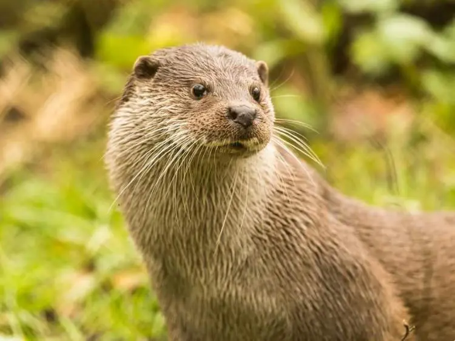
The Eurasian otter(Lutra lutra), also known as the European otter, Eurasian river otter, European river otter, common otter, and Old World otter, is a semiaquatic mammal native to Eurasia and the Maghreb. It is the most widely distributed member of the otter subfamily(Lutrinae) of the weasel family(Mustelidae).
Appearance
The Eurasian otter is a typical member of the otter subfamily. With brown fur on their backs and cream-coloured fur on their bellies, these long, slender creatures are well-equipped for their aquatic lifestyle. Their bones show osteosclerosis, which increases their density and reduces buoyancy. This otter differs from the North American river otter by its shorter neck, broader visage, the greater space between the ears and its longer tail. However, the Eurasian otter is the only otter in much of its range, so it is rarely confused for any other animal. Normally, this species is 57 to 95 cm (22.5 to 37.5 in) long, not counting a tail of 35-45cm(14-17.5 in). The female is shorter than the male. The otter's average body weight is 7 to 12kg(15 to 26 lb), although occasionally a large old male may reach up to 17kg(37 lb).
Habitat
The Eurasian otter is the most widely distributed otter species. Its range includes Europe, North Africa and parts of Asia as far as the Palestine region. Though currently thought to be extinct in Liechtenstein and Switzerland, it is now common in Latvia, along the coast of Norway, in the western regions of Spain and Portugal and across Great Britain and Ireland. In Italy, it lives in the southern part of the peninsula. It inhabits unpolluted bodies of fresh water such as lakes, streams, rivers, canals and ponds, as long as the food supply is adequate. In Andalusia, it uses artificial lakes on golf courses. It prefers the open areas of streams and also lives along the coast in salt water, but requires regular access to fresh water to clean its fur.
Diet
The Eurasian otter's diet consists primarily of fish, particularly in Mediterranean and temperate freshwater habitats where fish is most abundant. During winter and in cooler climates, the Eurasian otter's diet includes worms, caterpillars, clams, crustaceans, insects, eggs, birds, and small mammals, including young European beavers, and amphibians.
The Eurasian otter is capable of overpowering prey that is significantly larger than itself, and it occasionally hunts large waterbirds such as adult greylag geese.
Find out more here!
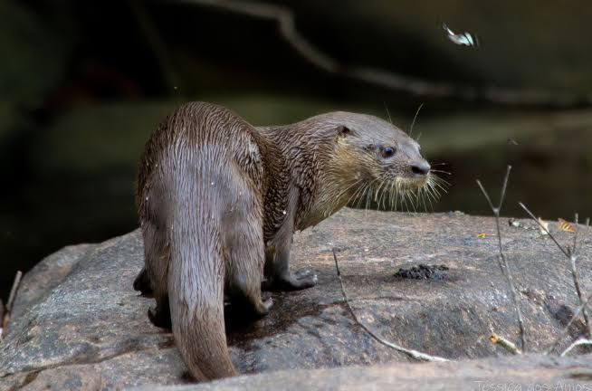
Appearance
The Mesoamerican Otter (Lontra annectens) can reach up to 1.2m in length and can weigh up to 12 kg as an adult. Its long and almost cylindrical tail, and small feet, are two of its more distinguishing features. This ‘new’ species is found mainly in central America, with populations in northern Venezuela and Colombia, with the Andes providing the barrier between them and the Neotropical otter.
Habiat
In 2024, a group of researchers found that the Neotropical otter that was formerly believed to range from Mexico down to Argentina was in fact two species, separated by the Andes mountain range.
The new species, the Mesoamerican otter was found to live in the northern parts of the former Neotropical otter range, with the Neotropical otter's range below that.
Diet
Fish make up 80% of their diet; crabs, snakes, lizards, frogs, birds and mammals make up the rest.
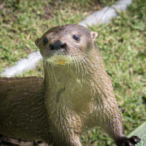
The neotropical otter or neotropical river otter(Lontra longicaudis) is a near-threatened(per the IUCN) otter species. The taxonomy of the genus Lontra has been debated, but the use of Lontra rather than Lutra for New World otters is generally supported. It is physically similar to the northern(L. canadensis) and southern river otter(L. provocax), which occur directly north and south of this species' range, respectively.
Appearance
The Neotropical otter is covered in a short, dark grayish-brown pelage. Fur color is lighter around the muzzle and throat. They possess a long wide tail, with short stout legs and fully webbed toes. Sexually dimorphic, the males are about 25% larger than the females. Its head-and-body length can range from 36-66 centimetres (14-26 in), plus a tail of 37-84 centimetres (15-33 in). Body mass of the otter generally ranges from 5 to 15 kilograms(11-33 pounds). Neotropical otters will communicate with nearby otters via scent marking. Communication may also occur via whistles, hums, and screeches.
Habitat
The Neotropical otter has the widest distribution of all the Lontra species. Their habitat can range from northwest Mexico to central Argentina. They prefer clear, fast-flowing rivers, and are rarely known to settle in sluggish, silt-laden lowland waters or boggy areas. While mostly occurring at 300-1,500m (980-4,900 ft) above sea level, they have been found settled at 3,000m (9,800 ft). They require dense riparian vegetation and abundant den sites but, other than that, the Neotropical otter is very versatile and tolerant to environmental change. The otters prefer den sites that are solid, high, dry, and in proximity to deep water. The Neotropical otter is the greatest generalist of all otter species. In addition to rivers and streams, they can settle in and exploit some rather formidable habitats, such as wastewater treatment plants, rice paddies, sugar cane plantations, estuaries, deltas, drainage ditches, and sometimes swamps. They can inhabit cold, glacial lakes and streams in the Andes of Ecuador and Colombia. Neotropical otters will also venture to the seashore and beaches(maintaining an almost "brackish" lifestyle), hunting marine creatures and playing in the highly saline water.
Diet
The Neotropical otter's diet consists mostly of fish and crustaceans making up 67% and 28%, respectively, of its total diet. The otter will also occasionally feed on mollusks and small mammals, as well as birds, large insects and fruits. In areas where fish and crustaceans are scarce, aquatic insects, such as dobsonfly larvae, can become its main prey. This otter is known to occasionally attack fishnets for a source of prey, hindering fishing productivity. Otters living near marine habitats can have a much higher proportion of crustaceans in their diets.
Seasonality also greatly affect otters' food choice. During the dry season, when less fish and crustaceans are available, one study found a higher proportion of frogs in otters' diet. Though, during this time, anurans and reptiles still made up a very small percentage of the total diet. This might also be due to the fact that certain frogs mate during the dry season, so the frogs are easier prey. All in all, the distribution of available food species in a particular area roughly correlates to the percentage of each species found in otters' diet.
Find out more here!
The North American River Otter
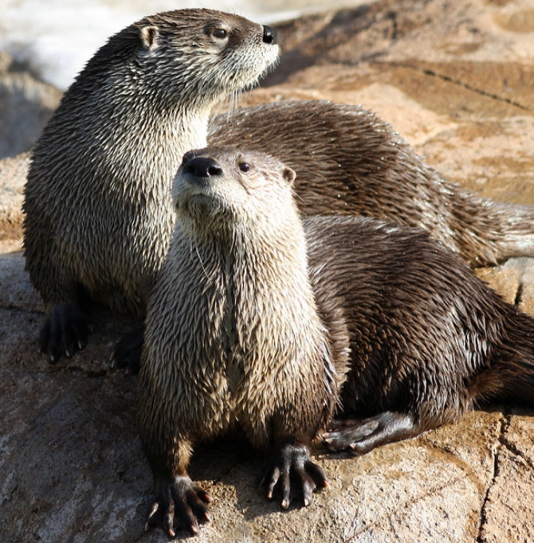
The North American river otter(Lontra canadensis), also known as the northern river otter and river otter, is a semiaquatic mammal that is endemic to the North American continent.
Subspecies
- ⚬ L. c. canadensis (Schreber, 1777) - (eastern Canada, U.S., Newfoundland)
- ⚬ L. c. kodiacensis (Goldman, 1935) - (Kodiak Island, Alaska)
- ⚬ L. c. lataxina (Cuvier, 1823) - (U.S.)
- ⚬ L. c. mira (Goldman, 1935) - (Alaska, British Columbia)
- ⚬ L. c. pacifica (J. A. Allen, 1898) - (Alaska, Canada, northern U.S., south to central California, northern Nevada, and northeastern Utah)
- ⚬ L. c. periclyzomae (Elliot, 1905) - (Queen Charlotte Islands, British Columbia)
- ⚬ L. c. sonora (Rhoads, 1898) - (U.S., Mexico)
Appearance
The North American river otter has long and thin whiskers that are used to detect prey in dark waters. An average adult male weighs about 11.3 kilograms(25 lb) against the female's average of 8.3kg (18 lb). Its body length ranges from 66 to 107cm (26-42 in). About one-third of the animal's total length consists of a long, tapered tail. Tail lengths range from 30 to 50cm (12-20 in). Large males can exceed a weight of 15kg (33 lb). It differs from the Eurasian otter by its longer neck, narrower visage, the smaller space between the ears, and shorter tail. Males and female river otters show different nonsexual physical characteristics, with males typically being larger.
Habitat
The North American river otter is found throughout North America, inhabiting inland waterways and coastal areas in Canada, the Pacific Northwest, the Atlantic states, and states on the Gulf of Mexico. They also inhabit the forested regions near the Pacific coast in North America. The species is also present throughout Alaska, including the Aleutian Islands, and the north slope of the Brooks Range.
Although commonly called a "river otter", the North American river otter is found in a wide variety of aquatic habitats, both freshwater and coastal marine, including lakes, rivers, inland wetlands, coastal shorelines, marshes, and estuaries. It can tolerate a great range of temperature and elevations. Aquatic life ties them almost exclusively to permanent watersheds. Their main requirements are a steady food supply and easy access to a body of water, but they are sensitive to pollution and disappear from tainted areas.
Diet
The diet of the North American River otters is extensive and mostly consists of fish, frogs, crayfish, turtles, insects, and some small mammals. They are known to hunt in pairs or alone and can hunt on both land and in the water. Lontra canadensis is a predator adapted to hunting in water, feeding on aquatic and semiaquatic animals. The vulnerability and seasonal availability of prey animals primarily determine their food habits and prey preferences.
Find out more here!
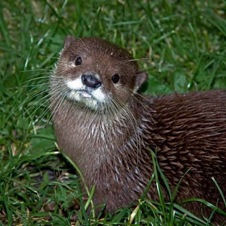
The southern river otter(Lontra provocax), or South American river otter, is an otter species that lives in much of Patagonia. It is listed by the International Union for Conservation of Nature as an endangered species.
Appearance
A medium-sized otter, the southern river otter's body can grow up to 70cm (28 in) long, with the tail adding about 40cm (16 in). Body weight averages about 5-10 kg (11-22 lb). Its fur is dark brown on the upper parts and a lighter cinnamon color or can be almost white on the underside.
Habitat
The southern river otter can be found in marine, freshwater, and terrestrial habitats, but are mostly found in freshwater lakes and rivers having a significant amount of dense vegetation, especially along the shorelines, which must be present to use as cover. Their habitats also need the root systems of mature trees, as well as fallen tree debris.
Although referred to as a "river" (freshwater) otter, the southern river otter is equally adapted to venturing into more brackish(even fully marine) waters to forage and hunt. This trait is similar to the South American marine otter(L. felina), a nearly fully marine, coast-inhabiting otter.
Behavior
Family groups usually consist only of a female and her young, as males are usually solitary except for the breeding season. Litter sizes average one to two pups, but up to four can be born at a time. They are piscivorous, and their natural prey includes many types of fish, crustaceans, mollusks, and occasionally birds or their eggs, particularly of ground-nesting species found near water. Occasional reptiles or amphibians may be hunted as well, including frogs, smaller turtles, lizards and even some snakes.
Find out more here!
The African Clawless Otter
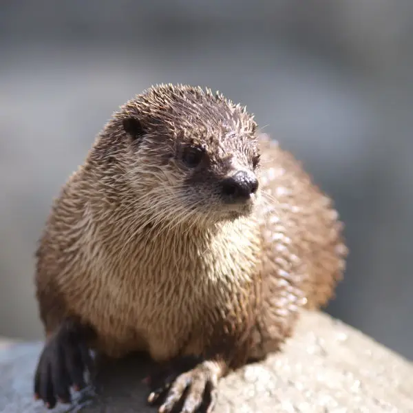
The African clawless otter(Lutra capensis), also known as the Cape clawless otter or groot otter, is the second-largest freshwater otter species.
Subspecies
- ⚬ A. c. capensis
- ⚬ A. c. hindei
- ⚬ A. c. meneleki
- ⚬ A. c. microdon
- ⚬ A. c. philippsi
Until recently the Congo clawless otter was considered a subspecies as well, but recent authorities treat it as a separate species A. congicus.
Appearance
The African clawless otter has a chestnut-coloured thick, smooth fur with almost silky underbellies. It is characterized by white facial markings that extend downward towards its throat and chest areas. Paws are partially webbed with five fingers, but without opposable thumbs. All lack claws except for digits 2, 3, and 4 of the hind feet. Its large skull is broad and flat, with a relatively small orbit and a short snout. Molars are large and flat, used for crushing of prey. Male otters are slightly larger than females on average. Adults are 113-163cm (44-64 in) in length, including their tails that comprised about a third of their length. Weights range from 10-36kg (22-79 lb), with most otters averaging between 12 and 21kg (26 and 46 lb). They are the third largest otter on average after the sea otter and giant otter and probably the third largest extant mustelid appearing to slightly outrival the wolverine, hog badger and European badger in mean body mass. Despite being closely related to the Asian small-clawed otter, the African clawless otter is often twice as massive.
Habitat
African clawless otters can be found anywhere from open coastal plains, to semiarid regions, to densely forested areas. Surviving mostly in southern Africa, the otters live in areas surrounding permanent bodies of water, usually surrounded by some form of foliage. Logs, branches, and loose foliage greatly appeal to the otter as this provides shelter, shade, and great rolling opportunities. Slow and rather clumsy on land, they build burrows in banks near water, allowing for easier food access and a quick escape from predators. In the False Bay area of the Cape Peninsula, they have been observed scavenging along beaches and rocks and hunting in shallow surf for mullet. They are mainly nocturnal in urban areas and lie up during the day in quiet, bushy areas.
Diet
The diet of the African clawless otter primarily includes water-dwelling animals, such as crabs, fish, frogs and worms. It dives after prey to catch it, then swims to shore again, where it eats. Its fore paws come in handy as searching devices and tools for digging on the muddy bottoms of ponds and rivers, picking up rocks and looking under logs. Extremely sensitive vibrissae are used as sensors in the water to pick up the movements of potential prey. A 2025 study of environmental and seasonal changes in the diet of the African clawless otter showed that although crabs were preferred as prey it also ate fish and insects and that its diet could respond to human pressures.
Find out more here!
The Asian Small-clawed Otter
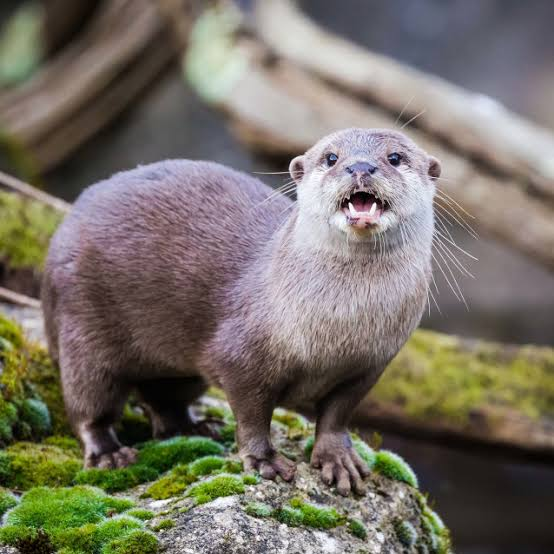
The Asian small-clawed otter(Lutra cinerea), also called oriental small-clawed otter and small-clawed otter, is an otter species native to South and Southeast Asia. It is the only species of the subgenus Amblonyx in the genus Lutra.
Appearance
The Asian small-clawed otter has deep brown fur with some rufous tinge on the back, but paler below. Its underfur is lighter near the base. The sides of the neck and head are brown, but its cheeks, upperlip, chin, throat and sides of the neck are whitish. Its skull is short, and the naked rhinarium rounded above. The muzzle has long coarse vibrissae on either side. Its eyes are located toward the front of the head. The small ears are oval-shaped with an inconspicuous tragus and antitragus. Its paws are narrow with short digits that are webbed to the last joint. There are short hairs on the lower sides of the interdigital webs. The four-lobed plantar pads are longer than wide. The claws are short, almost erect, and in some individuals even absent. Females have four mammary glands.
The Asian small-clawed otter is the smallest otter species in Asia. In head-to-body length, it ranges from 470 to 610mm (18.4 to 24 in) with a 260 to 350mm (10.2 to 13.6 in) long tail. The tapering tail is thick and muscular, especially at the base, and more than half the length of the body. Hind feet are 97 to 102mm (3.8 to 4 in) long. Length of skull ranges from 3.3 to 3.7in (84 to 94 mm). It does not have upper premolars and only four cheek teeth above. Adult captive otters range in weight from 2.7 to 3.5kg (6.0 to 7.7 lb).
Habitat
The Asian small-clawed otter's native range comprises parts of India to Southeast Asia including the islands of Sumatra, Java, Borneo and Palawan. It lives in freshwater wetlands such as swamps, meandering rivers, irrigated rice fields as well as estuaries, coastal lagoons and tidal pools. It occurs in West Bengal, Assam and Arunachal Pradesh, and in coastal regions of Odisha. In Karnataka, Nilgiri and Palni hills in Tamil Nadu, it lives in shallow mountain creeks up to an elevation of 2,000m (6,600 ft). In West Java, it inhabits areas along slow-flowing irrigation channels, pond areas and rice fields surrounded by vegetation that offers shelter. It also occurs in mangrove forests. In February 2025, the Asian small-clawed otter was photographed in Dadeldhura District in far-western Nepal.
Diet
The Asian small-clawed otter feeds mainly on crabs, mudskippers and Trichogaster fish. Its diet varies seasonally. When and where available, it also catches snakes, frogs, insects, rats and ricefield fish like catfish, Anabas testudineus and Channa striata. The size of crabs found in spraints in Huai Kha Khaeng Wildlife Sanctuary ranged in carapace width from 10 to 44cm (3.9 to 17.3 in). Captive Asian small-clawed otters were observed to leave shellfish in the sun so the heat causes them to open, making it possible for them to eat them without having to crush the shells.
Find out more here!
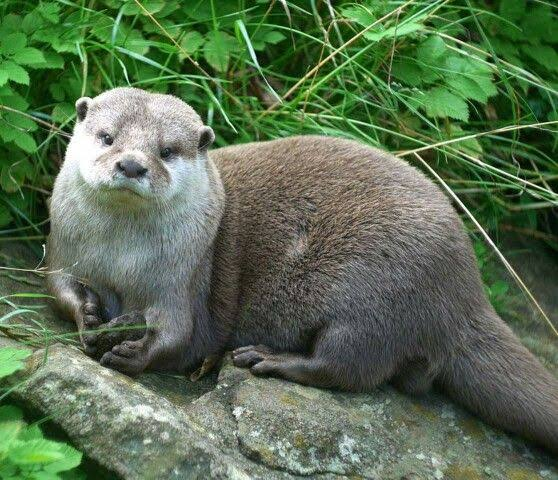
The Congo clawless otter(Lutra congica), also known as the Cameroon clawless otter, is a species in the family Mustelidae. It was formerly recognised as a subspecies(Aonyx capensis congicus) of the African clawless otter.
Appearance
Congo clawless otters are characterized by only partial webbing(between the toes of their back feet and no webbing on their front feet), and small, blunt, peg-like claws. They have very sensitive forepaws, which they use for foraging. Other otters have fully webbed feet and strong, well-developed claws. Clawless otters have slender, serpentine bodies with dense, luxurious fur and long tails. All otters have been exploited for their thick, velvety fur. Their head and body length measure to be about 600-1,000 mm (24-39 in), and their tail length is between 400 and 710mm (16 and 28 in). These large otters can weigh between 14 and 34kg (31 and 75 lb).
Habitat
This clawless otter is found in Angola, Cameroon, Central African Republic, Republic of the Congo, Democratic Republic of the Congo, Equatorial Guinea, Gabon, Rwanda, Uganda, and possibly Burundi and Nigeria. Its natural habitats are subtropical or tropical moist lowland forest, subtropical or tropical mangrove forest, subtropical or tropical swamps, subtropical or tropical moist montane forest, subtropical or tropical moist shrubland, subtropical or tropical seasonally wet or flooded lowland grassland, rivers, intermittent rivers, shrub-dominated wetlands, swamps, freshwater lakes, intermittent freshwater lakes, freshwater marshes, intermittent freshwater marshes, freshwater spring, inland deltas, saline lakes, intermittent saline lakes, saline marshes, intermittent saline marshes, shallow seas, subtidal aquatic beds, rocky shores, sandy shores, estuarine waters, intertidal flats, intertidal marshes, coastal saline lagoons, coastal freshwater lagoons, water storage areas, ponds, aquaculture ponds, seasonally flooded agricultural land, and canals and ditches.
Diet
Congo clawless otters feed on fairly soft prey items, such as small land vertebrates, frogs, and eggs.
Find out more here!